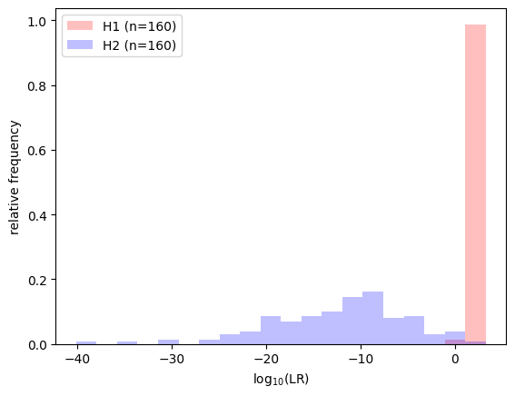
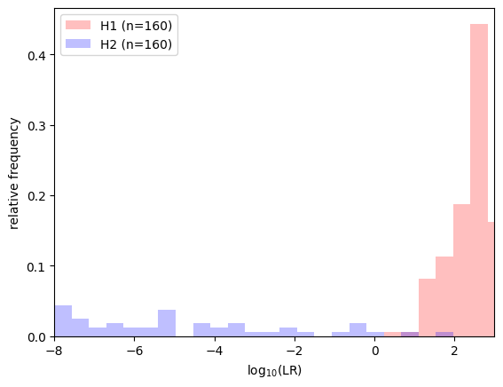
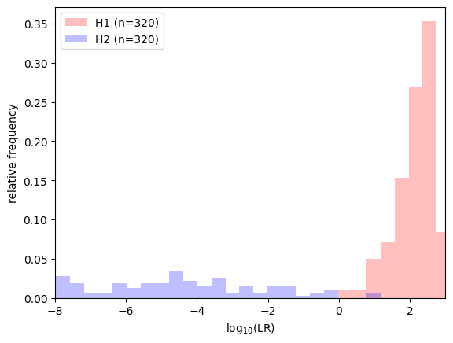

Python API: Overview
This is an introduction to the Python API. You will learn the basic concepts of data handling and LR calculation in LiR.
Organize your data
Data representation
It all starts with the data. LiR heavily relies on numpy for data handling but there are data classes where it all comes together. A simple dataset can be instantiated in Python:
import numpy as np
from lir import FeatureData
my_data = FeatureData(features=np.array([[1, 2], [3, 4], [5, 6], [7, 8]]))
print(f'This dataset contains {len(my_data)} instances.')
This dataset contains 4 instances.
In this example, the instances in the FeatureData dataset have features but no ground truth, so it cannot
be used for training models. If we have the hypothesis labels, we may add them as well:
my_data = FeatureData(
features=np.array([[1, 2], [3, 4], [5, 6], [7, 8]]),
hypothesis=np.array([0, 0, 1, 1])
)
print(f'This dataset contains {len(my_data)} instances.')
print(f'Its hypothesis labels are: {my_data.hypothesis}')
This dataset contains 4 instances.
Its hypothesis labels are: [0 0 1 1]
If we use the common-source model, we typically have no hypothesis labels, but we do have source labels. In that
case we use the source_ids attribute instead of hypothesis. For now, we work with hypothesis labels. The dataset
supports slicing.
print(f'The dataset contains {len(my_data[my_data.hypothesis==1])} instances of H1.')
print(f'The dataset contains {len(my_data[my_data.hypothesis==0])} instances of H2.')
my_slice = my_data[0:3]
print(f'The slice [0:3] of the dataset contains {len(my_slice)} instances.')
print(f'Its features are: {my_slice.features}')
print(f'Its hypothesis labels are: {my_slice.hypothesis}')
The dataset contains 2 instances of H1.
The dataset contains 2 instances of H2.
The slice [0:3] of the dataset contains 3 instances.
Its features are: [[1 2]
[3 4]
[5 6]]
Its hypothesis labels are: [0 0 1]
This example uses FeatureData. There can be other types of datasets, be it numeric features, scores, LLRs,
or something else, but the base class for all datasets is InstanceData.
Specialized sub classes are:
FeatureData, for instances which has numerical features (sub class oflir.InstanceData);PairedFeatureData, for pairs of instances that have numerical features (sub class ofFeatureData);LLRData, for LLRs, with or without intervals (sub class ofFeatureData).
Loading data
One of the datasets that are readily available is the glass dataset. It can be downloaded as a CSV file and
transformed into a FeatureData object.
from lir.datasets.feature_data_csv import FeatureDataCsvParser
import requests
import numpy as np
# retrieve the data
parser = FeatureDataCsvParser('https://raw.githubusercontent.com/NetherlandsForensicInstitute/elemental_composition_glass/main/duplo.csv',
source_id_column='Item',
instance_id_column='id',
feature_columns=['K39', 'Ti49', 'Mn55', 'Rb85', 'Sr88', 'Zr90', 'Ba137', 'La139', 'Ce140', 'Pb208'])
glass_data = parser.get_instances()
print(f'The glass dataset has numeric features, so it is of type {type(glass_data)}.')
print(f'It has {len(glass_data)} instances, each of which is a measurement on a range of chemical elements.')
# get the number of instances for each unique source id
unique_source_ids, instance_count_by_source_id = np.unique(glass_data.source_ids, return_counts=True)
print(f'The measurements are of {len(unique_source_ids)} different sources, i.e. glass fragments.')
# get the number of sources with this many instances
instance_counts, source_counts = np.unique(instance_count_by_source_id, return_counts=True)
for instance_count, source_count in zip(instance_counts, source_counts):
print(f'There are {source_count} sources with {instance_count} instances each.')
The glass dataset has numeric features, so it is of type <class 'lir.data.models.FeatureData'>.
It has 640 instances, each of which is a measurement on a range of chemical elements.
The measurements are of 320 different sources, i.e. glass fragments.
There are 320 sources with 2 instances each.
The dataset is obtained using FeatureDataCsvHttpParser. Like other
get_instances() to obtain the dataset.
Creating pairs from single measurements
We now have data on glass fragments, with two measurements (instances) from each glass fragment (source). In casework, we may want to compare two measurements, one from the trace source, and one from a reference source, and make an inference about source identity. That makes it a common-source LR system, requiring pairs of measurements, rather than individual measurements.
from lir.transform.pairing import SourcePairing
# combine the instances into pairs
pairing_method = SourcePairing(ratio_limit=1)
pairs = pairing_method.pair(glass_data, n_ref_instances=1, n_trace_instances=1)
print(f'We have combined the {len(glass_data)} instances into {len(pairs)} pairs.')
print(f'The paired data has features of all instances in the pairs, so it has type {type(pairs)}.')
print(f'There are {len(pairs[pairs.hypothesis==1])} pairs with both instances from the same source.')
print(f'There are {len(pairs[pairs.hypothesis==0])} pairs from different sources.')
We have combined the 640 instances into 640 pairs.
The paired data has features of all instances in the pairs, so it has type <class 'lir.data.models.PairedFeatureData'>.
There are 320 pairs with both instances from the same source.
There are 320 pairs from different sources.
We have created a same-source pair for each source that has at least two instances. The number of different-source pairs
is potentially much larger, but the number of pairs created is limited to the number of same-source pairs by the
ratio_limit argument.
Calculate LLRs
To compare the measurements within a pair, we use the distance function
ManhattanDistance.
from lir.transform.distance import ManhattanDistance
# reduce the pairs to a single value by calculating the Manhattan distance
distances = ManhattanDistance().apply(pairs)
print(f'The set of distances has type {type(distances)}.')
print(f'The distances have an average of {np.mean(distances.features)}.')
print(f'The standard deviation is {np.std(distances.features)}.')
The set of distances has type <class 'lir.data.models.FeatureData'>.
The distances have an average of 1.7089890079668753.
The standard deviation is 1.8056651594558009.
Now it is time to calculate LLRs…
from lir.algorithms.logistic_regression import LogitCalibrator
# calculate LLRs
llrs = LogitCalibrator().fit_apply(distances)
different_source_llrs = llrs[llrs.hypothesis==0]
same_source_llrs = llrs[llrs.hypothesis==1]
print(f'The set of LLRs has type {type(llrs)}.')
print(f'The median LLR for different-source pairs is {np.median(different_source_llrs.llrs)}.')
print(f'The median LLR for same-source pairs is {np.median(same_source_llrs.llrs)}.')
The set of LLRs has type <class 'lir.data.models.LLRData'>.
The median LLR for different-source pairs is -5.613832175498336.
The median LLR for same-source pairs is 1.6030369621847458.
Split the data into a training set and a test set
Above, we training the system and calculated LLRs using the same pairs, which is not a sound experimental setup!
In an experiment we work with lir.data_strategies. This can be a simple train/test split, or a more
advanced configuration such as cross-validation.
A data strategy inherits from DataStrategy and implements an apply() method that returns an iterator
of pairs of training and test sets.
Example:
from lir.data_strategies import SourcesTrainTestSplit
splitter = SourcesTrainTestSplit(test_size=0.5)
((training_data, test_data),) = splitter.apply(glass_data)
print(f'We have {len(training_data)} instances available for training our models.')
print(f'We have {len(test_data)} instances available as test data.')
We have 320 instances available for training our models.
We have 320 instances available as test data.
Define an LR system
There can be many different LR system architectures. Refer to the selection guide if unsure which one to use.
The exact parameters depend on the type of LR system. The main ingredient is typically a pipeline of modules. The modules are executed one by one, and each module takes the output of the previous module, transforms the data, and passes the data to the next module. The modules may reduce or expand the number of features, but never change the number of instances or pairs.
An LR system may have multiple modules or pipelines as its arguments, each of which has a different role. For example, a score-based LR system has a preprocessing module, to process single instances, and a comparing module or pipeline, to calculate LLRs for the pairs.
The Pipeline class accepts any LiR module scikit-learn transformer, scikit-learn
estimator, or even other pipelines as its modules, as long as the module can work with the data.
For example, the StandardScaler transforms the data to have mean = 0 and standard deviation = 1.
Example:
from sklearn.preprocessing import StandardScaler
from lir.transform.pipeline import Pipeline
preprocessing_pipeline = Pipeline([
('scale', StandardScaler()),
])
normalized_glass_data = preprocessing_pipeline.fit_apply(glass_data)
A simple LR system could take the manhattan distance of each pair and then apply some kind of calibration. We can combine those steps in a pipeline.
from lir.transform.distance import ManhattanDistance
from lir.algorithms.logistic_regression import LogitCalibrator
comparing_pipeline = Pipeline([
('distance', ManhattanDistance()),
('logit', LogitCalibrator()),
])
llrs = comparing_pipeline.fit_apply(pairs)
We can use these components in a score-based LR system:
from lir.lrsystems.score_based import ScoreBasedSystem
# initialize the score-based LR system with the components we created before
lrsystem = ScoreBasedSystem(
preprocessing_pipeline=preprocessing_pipeline,
pairing_function=pairing_method,
evaluation_pipeline=comparing_pipeline,
)
# use the training data to fit the LR system
lrsystem.fit(training_data)
# use the test data to calculate LLRs
llrs = lrsystem.apply(test_data)
# plot results
import lir.plotting
with lir.plotting.show() as ax:
ax.lr_histogram(llrs)
# zoom in on the LLRs around 0
with lir.plotting.show() as ax:
ax.set_xlim(-8, 3)
ax.lr_histogram(llrs, bins=100)


Optional: use cross-validation
Above, we used a simple train/test split. Alternatives such as cross-validation use the data more efficiently, but we have to deal with multiple train/test splits.
from lir.data_strategies import SourcesCrossValidation
from lir.data.models import concatenate_instances
# initialize 5-fold cross-validation
splitter = SourcesCrossValidation(folds=5)
# initialize the results as an empty list
results = []
for training_data, test_data in splitter.apply(glass_data):
# since we do five-fold cross-validation, we have five different
# train/test splits of the same data
# fitting and applying an LR system can be a one-liner
subset_llrs = lrsystem.fit(training_data).apply(test_data)
# add the LLRs to results list
results.append(subset_llrs)
# combine all LLRs into a single object
llrs = concatenate_instances(*results)
# zoom in on the LLRs around 0
with lir.plotting.show() as ax:
ax.set_xlim(-8, 3)
ax.lr_histogram(llrs, bins=100)

This time, we have twice as much test data altogether, because each pair appears in one of the test sets. Results should look similar compared to the train/test split.
Is this an adequate LR system?
Next step: learn how to assess an LR system’s performance.